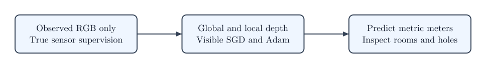
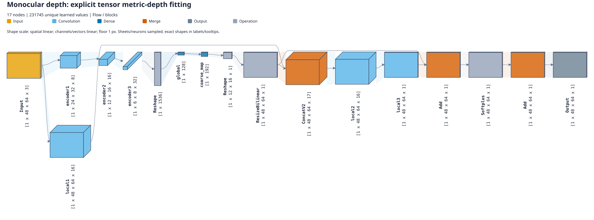
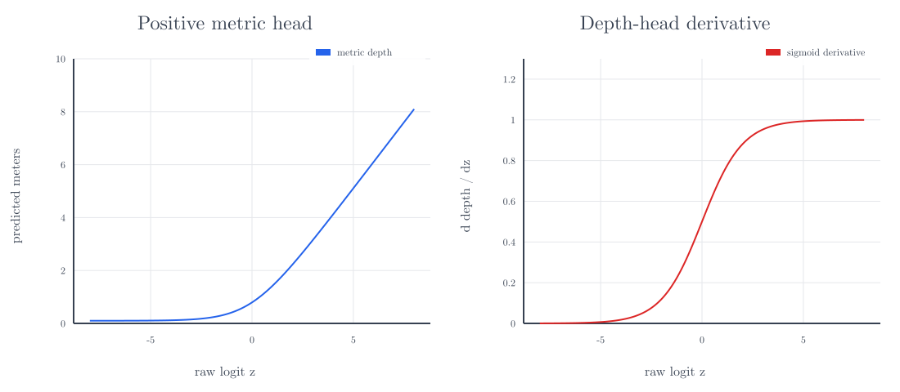
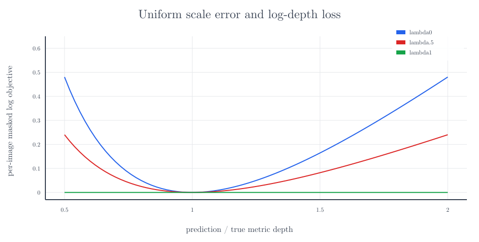
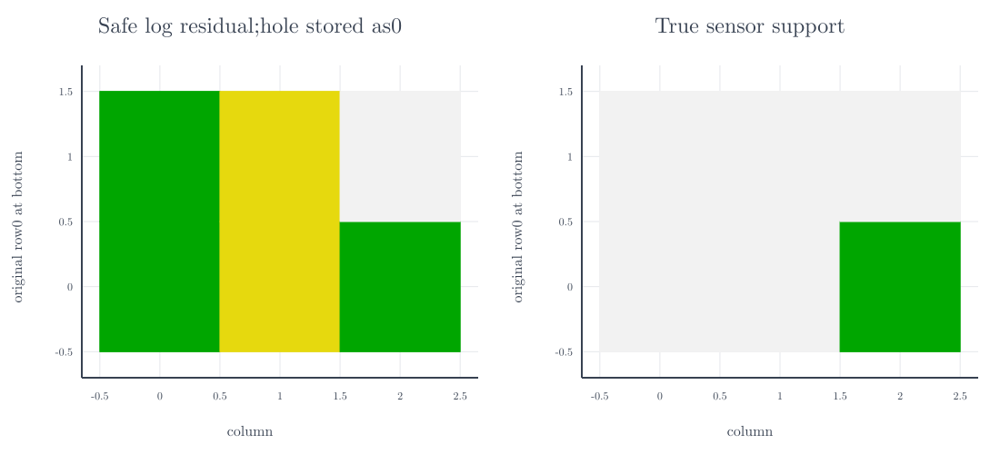
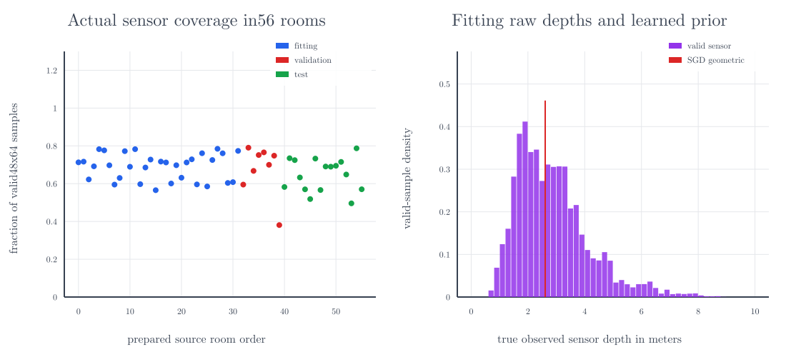
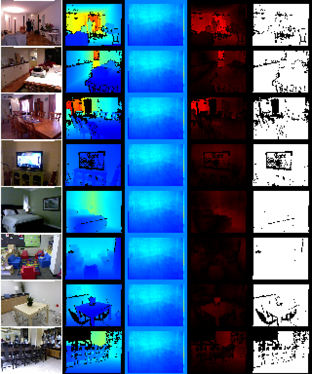
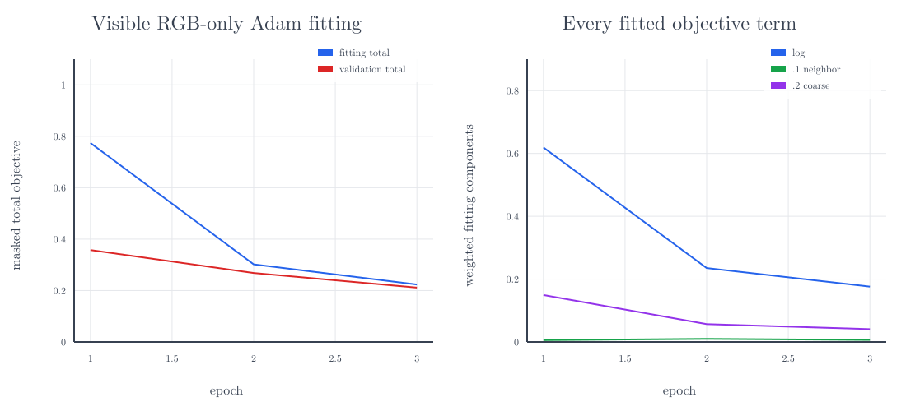
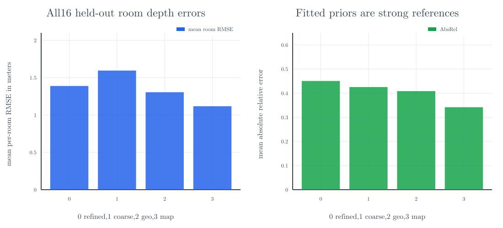
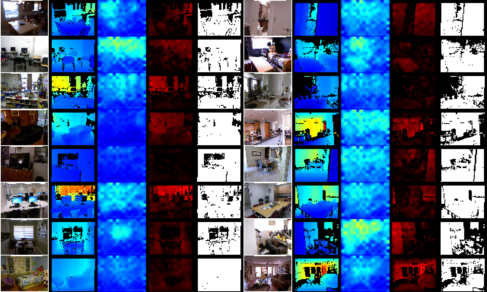

Monocular depth: explicit tensor metric-depth fitting
Abstract
One RGB image must reveal metric scene depth despite ambiguous scale and missing sensor supervision. A global coarse field and local RGB refinement predict positive depth in meters. Hand log/neighbor checks precede genuine room-disjoint NYU raw sensor pairs,visible SGD priors and complete-model Adam,with immutable RGB-only restoration and every held-out room error shown.
Source example: examples/cpp/source/nn/1_convolutional_neural_networks/1.8_other_vision_tasks/monocular_depth.cpp.
The method
The observation is sampled RGB only. Positive coarse/refined heads emit meters; log-depth losses use true sensor support and retain metric-scale supervision at lambda.5. Valid-neighbor differences add local structure without treating holes as edges. Separate fitting-only geometric/spatial log-depth parameters provide explicit optimizer-based references. All numeric preprocessing, objectives,inference,metrics and display values use tensors.
The concept diagram below is drawn by dm::graphics::Diagram. Its editable C++
source is the complete block below; regeneration uses the same datamunge toolchain
as the numerical examples. Exports consume the saved local SVG.
#include <dm/dm.hpp>
int main() {
std::filesystem::create_directories("build");
dm::graphics::Diagram diagram;
diagram.node("n0", {0.0, 0}, "Observed RGB only\nTrue sensor supervision");
diagram.node("n1", {5.2, 0}, "Global and local depth\nVisible SGD and Adam");
diagram.node("n2", {10.4, 0}, "Predict metric meters\nInspect rooms and holes");
diagram.edge("n0", "n1").edge("n1", "n2");
diagram.save_svg("build/monocular_depth_concept.svg");
}
Executed tensor architecture
This figure executes the inference configuration shown in the code, using a zero-valued shape probe without fitting or loading a checkpoint. Named stage boundaries group whole subgraphs where available; other nodes retain functional-layer detail. Exact batch-inclusive shapes and reachable parameter totals come from the trace. Shared linear scales map spatial dimensions and channel counts to blocks; the one-pixel visibility floor is disclosed in the legend. Labels use compact monospace text, rotate counterclockwise and sit beside their own glyphs. Arrows flow left to right; wide diagrams scroll at native size on the website.
#include <dm/dm.hpp>
int main() {
namespace n = dm::nn;
namespace m = n::models;
n::set_num_threads(2);
std::filesystem::create_directories("build");
n::ParameterStore p(139);
n::Module architecture_model(
[&](const n::Tensor& image) { return m::MonocularDepth(p, image).depth; },
"Monocular depth: explicit tensor metric-depth fitting");
n::ModelPlotOptions options;
options.style = n::ModelPlotStyle::Flow;
options.detail = n::ModelPlotDetail::Blocks;
options.labels = {.type = n::ModelPlotLabel::NameAndShape, .size = 12, .wrap = 24};
options.spacing = {.layer = 24, .lane = 12, .label = 8, .margin = 20};
options.sizing.spatial_size = 96;
options.sizing.channel_size = 42;
options.sizing.minimum_extent = 1;
options.opacity = .8;
const auto diagram = architecture_model.plot(n::zeros({1, 48, 64, 3}), options);
diagram.save_svg("build/monocular_depth_architecture.svg");
std::print(
"{} displayed nodes; {} reachable learned values.\n",
diagram.nodes().size(),
diagram.parameter_count());
}17 displayed nodes; 231745 reachable learned values.

A positive metric head still has a derivative
The network predicts a raw logit z,then emits d=.1+softplus(z) in meters. Its derivative is sigmoid(z). This gives positive depth without an upper prediction clamp or GT-derived scale. Very negative Float32 logits can round to the .1 floor;large positive logits remain unbounded. The color display later saturates at10m,while losses and metrics retain the original prediction.
#include <dm/dm.hpp>
int main() {
namespace n = dm::nn;
namespace m = n::models;
const auto z = n::arange(-8., 8.001, .05, n::DType::Float64).requires_grad_();
const auto depth = m::PositiveMetricDepth(z);
const auto gradient = n::grad(n::sum(depth), {z})[0];
auto a = dm::graphics::RPlot::create(), b = dm::graphics::RPlot::create();
a.lines(z.to_vector<double>(), depth.to_vector<double>(), "metric depth", {37, 99, 235})
.title("Positive metric head")
.x_label("raw logit z")
.y_label("predicted meters")
.y_limits(0, 10);
b.lines(z.to_vector<double>(), gradient.to_vector<double>(), "sigmoid derivative",
{220, 38, 38})
.title("Depth-head derivative")
.x_label("raw logit z")
.y_label("d depth / dz")
.y_limits(0, 1.3);
std::filesystem::create_directories("build");
std::filesystem::create_directories("figures");
const auto legend =
n::ones({1, 12, 1, 1}) * n::arange(.1, 10.0001, .05).reshape({1, 1, -1, 1});
n::save_image_grid(m::DepthColors(legend).to(n::DType::Float32),
"build/monocular_depth_legend.png", 1, 0, 1, 0, 0, 3);
auto layout = dm::graphics::RLayout::create(1, 2);
layout.add(a).add(b).size(1100, 480).fit_panels().save_svg("build/monocular_depth_head.svg");
const auto extreme = m::PositiveMetricDepth(n::tensor({-80., 0., 80.}));
std::print("Raw logits-80,0,80 -> depths {:.6f},{:.6f},{:.6f}m;no prediction maximum.\n",
extreme.to_vector<double>()[0], extreme.to_vector<double>()[1],
extreme.to_vector<double>()[2]);
}Raw logits-80,0,80 -> depths 0.100000,0.793147,80.099998m;no prediction maximum.

Scale-invariant structure does not recover metric scale
Let e=log(prediction)-log(sensor). Per supported image,the source loss is mean(e²)-lambda*mean(e)². Lambda0 gives log MSE;lambda1 removes a uniform multiplicative scale error. Default lambda.5 retains scale supervision. If prediction=alpha*truth everywhere,the loss is(1-lambda)*log(alpha)². A two-times-depth prediction can therefore have zero scale-invariant error while still having large metric RMSE and AbsRel. Evaluation applies no median alignment or other target-derived scale correction.
#include <dm/dm.hpp>
int main() {
namespace n = dm::nn;
namespace m = n::models;
const auto scales = n::arange(.5, 2.001, .02, n::DType::Float64);
const auto truth = n::ones({1, 2, 3, 1}, n::DType::Float64), mask = n::ones_like(truth);
std::vector<double> mse, half, invariant;
for (double scale : scales.to_vector<double>()) {
mse.push_back(m::DepthLogLoss(truth * scale, truth, mask, 0.).item());
half.push_back(m::DepthLogLoss(truth * scale, truth, mask, .5).item());
invariant.push_back(m::DepthLogLoss(truth * scale, truth, mask, 1.).item());
}
auto p = dm::graphics::RPlot::create();
p.lines(scales.to_vector<double>(), mse, "lambda0", {37, 99, 235})
.lines(scales.to_vector<double>(), half, "lambda.5", {220, 38, 38})
.lines(scales.to_vector<double>(), invariant, "lambda1", {22, 163, 74})
.title("Uniform scale error and log-depth loss")
.x_label("prediction / true metric depth")
.y_label("per-image masked log objective")
.y_limits(-.03, .65)
.size(950, 480);
std::filesystem::create_directories("build");
p.save_svg("build/monocular_depth_scale.svg");
const auto score = m::ScoreTensorDepth(n::full({1, 1, 1, 1}, 2.), n::ones({1, 1, 1, 1}),
n::ones({1, 1, 1, 1}));
std::print("Twice true depth:AbsRel {},RMSE {}m,SILog {},delta1 {}. Scale invariance does "
"not imply metric accuracy.\n",
score.abs_rel.item(), score.rmse.item(), score.silog.item(), score.delta1.item());
}Twice true depth:AbsRel 1,RMSE 1m,SILog 0,delta1 0. Scale invariance does not imply metric accuracy.

Sensor holes must not become artificial edges
The neighbor loss averages absolute log-residual differences only when both endpoints have true sensor support. In the hand2x3 log-error field [0,1,hole;0,1,2],five neighbor pairs are eligible,and their absolute differences sum to3. The neighbor loss is therefore .6. Five valid samples have mean error.8 and mean square1.2,so lambda.5 log loss is .88. The NaN hole is selected out *before* logarithms,and its prediction derivative must be zero.
#include <dm/dm.hpp>
int main() {
namespace n = dm::nn;
namespace m = n::models;
const auto error = n::from_vector(std::vector<double>{0, 1, NAN, 0, 1, 2}, {1, 2, 3, 1});
const auto truth = n::from_vector(std::vector<double>{1, 1, NAN, 1, 1, 1}, {1, 2, 3, 1});
const auto prediction = n::exp(error).requires_grad_(), mask = n::ones_like(truth);
const auto log = m::DepthLogLoss(prediction, truth, mask),
neighbor = m::DepthGradientLoss(prediction, truth, mask);
const auto gradient = n::grad(log + .1 * neighbor, {prediction})[0];
const auto safe = m::DepthLogError(prediction, truth, mask);
if (std::abs(log.item() - .88) > 1e-12 || std::abs(neighbor.item() - .6) > 1e-12 ||
gradient.to_vector<double>()[2] != 0)
return 1;
auto a = n::plot_tensor_map(n::reverse(safe.error.reshape({2, 3}), {0}), 0, 2),
b = n::plot_tensor_map(n::reverse(safe.valid.reshape({2, 3}), {0}), 0, 1);
a.title("Safe log residual;hole stored as0")
.x_label("column")
.y_label("original row0 at bottom");
b.title("True sensor support").x_label("column").y_label("original row0 at bottom");
std::filesystem::create_directories("build");
auto layout = dm::graphics::RLayout::create(1, 2);
layout.add(a).add(b).size(1100, 500).fit_panels().save_svg(
"build/monocular_depth_neighbors.svg");
std::print("Five valid samples/pairs;log loss {:.2f},neighbor loss {:.2f},invalid "
"prediction gradient {}.\n",
log.item(), neighbor.item(), gradient.to_vector<double>()[2]);
}Five valid samples/pairs;log loss 0.88,neighbor loss 0.60,invalid prediction gradient 0.

A global coarse field and RGB local refinement
This small from-scratch network is inspired by coarse/fine depth prediction; it is not the original Eigen backbone or a pretrained NYU model. Three stride2 RGB convolutions feed a128-unit global layer and12x16 logit map. Half-pixel bilinear upsampling provides the coarse field. Three local RGB convolutions predict a residual,then positive heads emit coarse and refined metric depth. There are16 learned tensors,231745 scalars,11 exposed stages and no BN. The total objective is refined log loss+.1 valid-neighbor loss+.2 coarse log loss,with lambda.5 in both log terms. RGB is the only forward image input.
#include <dm/dm.hpp>
int main() {
namespace n = dm::nn;
namespace m = n::models;
n::set_num_threads(2);
n::ParameterStore p(139);
const auto rgb =
(.5 + .4 * n::sin(n::arange(0, 2 * 48 * 64 * 3, 1, n::DType::Float64) * .17))
.to(n::DType::Float32)
.reshape({2, 48, 64, 3})
.requires_grad_();
const auto out = m::MonocularDepth(p, rgb);
const auto losses =
m::DepthObjective(out, n::ones({2, 48, 64, 1}) * 2., n::ones({2, 48, 64, 1}));
auto leaves = p.parameters();
leaves.push_back(rgb);
const auto gradients = n::grad(losses[0], leaves);
double minimum = INFINITY;
for (const auto &g : gradients) {
if (!n::all(n::is_finite(g)).item<bool>())
return 1;
minimum = std::min(minimum, n::sqrt(n::sum(n::square(g.to(n::DType::Float64)))).item());
}
if (minimum <= 0 || p.count() != 231745 || p.size() != 16 || out.stages.size() != 11)
return 1;
std::print("231745 learned scalars/16 leaves,no BN;all16 plus RGB gradients "
"finite/nonzero,min norm {:.3g}.\n| stage | sample shape |\n|---:|---|\n",
minimum);
for (std::size_t i = 0; i < out.stages.size(); ++i) {
std::print("| {} |", i + 1);
for (auto d : out.stages[i].shape())
std::print(" {}", d);
std::print(" |\n");
}
}231745 learned scalars/16 leaves,no BN;all16 plus RGB gradients finite/nonzero,min norm 0.00578.
| stage | sample shape |
|---|---|
| 1 | 2 24 32 8 |
| 2 | 2 12 16 16 |
| 3 | 2 6 8 32 |
| 4 | 2 128 |
| 5 | 2 192 |
| 6 | 2 12 16 1 |
| 7 | 2 48 64 1 |
| 8 | 2 48 64 16 |
| 9 | 2 48 64 16 |
| 10 | 2 48 64 1 |
| 11 | 2 48 64 1 |
Original NYU RGB/raw sensor pairs and visible SGD priors
The official labeled Matlab/HDF5 archive includes aligned images and
rawDepths. Use *rawDepths*,not the separately inpainted depths array.
Sensor depth is already projected to RGB coordinates and measured in meters.
The report supplies a reproducible replacement for the old external archive.
Place official nyu_depth_v2_labeled.mat in
build/cnn-datasets/monocular_depth and run from the repository root:
#include <dm/dm.hpp>
int main() {
const std::filesystem::path cache = dm::datasets::data_home();
dm::datasets::prepare_example_data("depth", (cache / "monocular_depth").string());
}The preparation needs C+23,pkg-config,datamunge and HDF5 C+ development
headers/libraries(hdf5_cpp,or hdf5 plus the C++ library). The pinned file
has2972037809 bytes and SHA256
2d724b0c0ab358aa1ce5df855e5bd14a2279ab7202efe22f32a30d612dcb86aa.
HDF5 handles byte/metric ingress and room-name metadata. Tensor transpose
restores the original Matlab layout. Tensor gathers select the *same* source
rows/columns5,15,...475/635 from RGB and raw depth,giving48x64 samples.
No interpolation,depth filling,resize or estimated scale alignment occurs.
RGB is normalized/255;raw depths are valid only if finite,.1f and=10m.
Invalid values become explicit mask0/depth0.
Keep the first original aligned frame from each of464 canonical rooms,sort room names,shuffle metadata with Python Random(137),then choose32 fitting, eight validation and16 test rooms. All56 rooms and original source rows are distinct. The manifest records each original name/ID/frame,split,fingerprint and preprocessing. This is a small custom room split,not NYU benchmark accuracy.
Both references are fitted in *log-depth* with visible SGD. A pooled scalar minimizes masked log MSE;one step at.5 reaches its log mean. A separate3072-leaf image minimizes the sum of per-position masked log MSEs. Positions with no fitting sensor support get an explicit squared-distance target equal to the already fitted pooled log value. One step at.5 reaches each mean/fallback. The source closed-form helper is only an independent parity oracle.
#include <dm/dm.hpp>
int main() {
namespace n = dm::nn;
namespace m = n::models;
n::set_num_threads(2);
std::filesystem::path cache;
if (const auto *p = std::getenv("DATAMUNGE_DATA_DIR"))
cache = p;
else if (const auto *p = std::getenv("XDG_CACHE_HOME"))
cache = std::filesystem::path(p) / "datamunge/datasets";
else
cache = std::filesystem::path(std::getenv("HOME")) / ".cache/datamunge/datasets";
std::filesystem::path root = cache / "monocular_depth";
if (const auto *p = std::getenv("DATAMUNGE_DEPTH_DIR"))
root = p;
else
dm::datasets::prepare_example_data("depth", root.string());
const auto split = m::LoadDepthPairs(root);
const auto mask = split.fit.valid.to(n::DType::Float64),
safe = n::where(n::greater(split.fit.valid, 0.), split.fit.depth, 1.)
.to(n::DType::Float64),
target = n::log(safe), total = n::sum(mask), counts = n::sum(mask, {0}, true);
n::OptimizerConfig config;
config.kind = n::OptimizerKind::Sgd;
n::ParameterStore pooled(151, n::DType::Float64);
const auto global = pooled.get("log_depth", {1}, n::init::zeros());
n::Optimizer global_sgd(pooled, .5, config);
for (int step = 0; step < 1; ++step) {
const auto objective = n::sum(mask * n::square(global - target)) / total;
global_sgd.minimize(objective);
}
n::ParameterStore spatial(157, n::DType::Float64);
const auto image = spatial.get("log_depth", {1, 48, 64, 1}, n::init::zeros());
n::Optimizer image_sgd(spatial, .5, config);
const auto absent = n::equal(counts, 0.).to(n::DType::Float64);
for (int step = 0; step < 1; ++step) {
const auto numerator = n::sum(mask * n::square(image - target), {0}, true) +
absent * n::square(image - global.detach());
const auto objective = n::sum(numerator / n::maximum(counts, n::ones_like(counts)));
image_sgd.minimize(objective);
}
const auto geometric = n::exp(global.detach()).to(n::DType::Float32),
map = n::exp(image.detach()).to(n::DType::Float32);
const auto oracle = m::FitDepthPriors(split.fit);
const double a = n::max(n::abs(geometric - n::full({1}, oracle.geometric))).item(),
b = n::max(n::abs(map - oracle.spatial)).item();
if (a > 5e-7 || b > 5e-7)
return 1;
const auto first = m::DepthBatch(split.fit, {0, 1, 2, 3, 4, 5, 6, 7});
const auto baseline = n::ones(first.depth.shape()) * map;
std::filesystem::create_directories("build");
std::filesystem::create_directories("figures");
n::save_npz("build/monocular_depth_priors.npz",
{{"geometric", geometric}, {"spatial", map}});
n::save_image_grid(m::DepthPreviewTiles(first, baseline),
"build/monocular_depth_inputs.png", 1, 0, 1, 0, 0, 2);
auto coverage = dm::graphics::RPlot::create();
const std::vector<std::pair<std::string, m::DepthData>> data = {
{"fitting", split.fit}, {"validation", split.validation}, {"test", split.test}};
const std::array<dm::graphics::RGB, 3> colors = {
{{37, 99, 235}, {220, 38, 38}, {22, 163, 74}}};
int offset = 0, index = 0;
std::print(
"Visible SGD(.5):one pooled scalar update and one3072-coordinate image update. "
"Closed-form parity {:.3g}/{:.3g};pooled geometric depth {:.6f}m;unobserved fitting "
"positions {}.\n| split | rooms | true sensor samples |\n|---|---:|---:|\n",
a, b, geometric.item(), n::count_nonzero(absent).item<std::int64_t>());
for (const auto &item : data) {
const auto values = n::mean(item.second.valid.to(n::DType::Float64), {1, 2, 3});
const auto x = n::arange(offset, offset + item.second.rgb.size(0));
coverage.points(x.to_vector<double>(), values.to_vector<double>(), item.first,
colors[index++]);
std::print("| {} | {} | {} |\n", item.first, item.second.rgb.size(0),
n::count_nonzero(item.second.valid).item<std::int64_t>());
offset += item.second.rgb.size(0);
}
coverage.title("Actual sensor coverage in56 rooms")
.x_label("prepared source room order")
.y_label("fraction of valid48x64 samples")
.y_limits(0, 1.3);
const auto edges = n::arange(0., 10.0001, .2, n::DType::Float64),
left = n::slice_axis(edges, 0, 0, 50), right = n::slice_axis(edges, 0, 1, 51),
centers = (left + right) / 2.;
const auto values = split.fit.depth.to(n::DType::Float64).reshape({-1, 1}),
present = n::greater(split.fit.valid.reshape({-1, 1}), 0.);
const auto hits =
n::logical_and(present, n::logical_and(n::greater_equal(values, left.reshape({1, 50})),
n::less(values, right.reshape({1, 50}))));
const auto density = n::sum(hits.to(n::DType::Float64), {0}) / (total * .2);
const double high = n::max(density).item() * 1.4;
auto distribution = dm::graphics::RPlot::create();
distribution
.bars(centers.to_vector<double>(), density.to_vector<double>(), "valid sensor",
{147, 51, 234}, .18)
.lines({geometric.item(), geometric.item()}, {0., high * .8}, "SGD geometric",
{220, 38, 38})
.title("Fitting raw depths and learned prior")
.x_label("true observed sensor depth in meters")
.y_label("valid-sample density")
.y_limits(0, high);
auto layout = dm::graphics::RLayout::create(1, 2);
layout.add(coverage)
.add(distribution)
.size(1100, 500)
.fit_panels()
.save_svg("build/monocular_depth_data.svg");
}Visible SGD(.5):one pooled scalar update and one3072-coordinate image update. Closed-form parity 0/0;pooled geometric depth 2.608413m;unobserved fitting positions 602.
| split | rooms | true sensor samples |
|---|---|---|
| fitting | 32 | 67717 |
| validation | 8 | 16586 |
| test | 16 | 31808 |


Visible RGB-only Adam and immutable restored prediction
Warm all16 leaves before Adam(.001),then show every four-image minibatch and objective. Three epochs give24 updates. Validation total loss selects the checkpoint. The independent restored model receives *RGB only*;depth, validity,priors and optimizer are absent from its forward call. Check exact checkpoint parity,all learned values immutable,and single/batch agreement.
Compare refined/coarse predictions with both saved SGD references on all16 test rooms. Metrics use true sensor support and equal room weights:AbsRel, SqRel,mean per-room RMSE,natural-log RMSE,absolute log10,SILog,and strict ratio thresholds delta1/2/3. SILog uses a centered log-residual variance to avoid cancellation. Predictions receive no GT median alignment or numeric clipping. Depth colors are display-only.
#include <dm/dm.hpp>
int main() {
namespace n = dm::nn;
namespace m = n::models;
n::set_num_threads(2);
std::filesystem::path cache;
if (const auto *p = std::getenv("DATAMUNGE_DATA_DIR"))
cache = p;
else if (const auto *p = std::getenv("XDG_CACHE_HOME"))
cache = std::filesystem::path(p) / "datamunge/datasets";
else
cache = std::filesystem::path(std::getenv("HOME")) / ".cache/datamunge/datasets";
std::filesystem::path root = cache / "monocular_depth";
if (const auto *p = std::getenv("DATAMUNGE_DEPTH_DIR"))
root = p;
else
dm::datasets::prepare_example_data("depth", root.string());
const auto split = m::LoadDepthPairs(root);
n::ParameterStore p(139);
{
n::NoGradGuard guard;
m::MonocularDepth(p, n::zeros({1, 48, 64, 3}));
}
n::OptimizerConfig opt;
opt.kind = n::OptimizerKind::Adam;
n::Optimizer adam(p, .001, opt);
auto predict = [](n::ParameterStore &store, const n::Tensor &rgb) {
n::NoGradGuard guard;
std::vector<n::Tensor> refined, coarse;
for (std::int64_t i = 0; i < rgb.size(0); i += 4) {
const auto out =
m::MonocularDepth(store, n::slice_axis(rgb, 0, i, std::min(i + 4, rgb.size(0))));
refined.push_back(out.depth);
coarse.push_back(out.coarse);
}
return std::pair{n::concat(refined, 0), n::concat(coarse, 0)};
};
auto loss = [&](const m::DepthData &d) {
n::NoGradGuard guard;
return m::DepthObjective(m::MonocularDepth(p, d.rgb), d.depth, d.valid)[0].item();
};
const auto probe = m::DepthBatch(split.fit, {0, 1, 2, 3});
const double initial = loss(probe);
n::BatchOrder order(32, 4, 149);
std::vector<double> epochs, training, valid, log_term, gradient_term, coarse_term;
double best = INFINITY;
int selected = 0, updates = 0;
std::filesystem::create_directories("build");
std::filesystem::create_directories("figures");
std::print("231745 learned scalars/16 warmed leaves,no BN.\n| epoch | fit total | fit log | "
"fit neighbor | fit coarse | validation |\n|---:|---:|---:|---:|---:|---:|\n");
for (int epoch = 1; epoch <= 3; ++epoch) {
order.begin_epoch();
std::array<double, 4> totals{};
int seen = 0;
for (auto ids = order.next(); !ids.empty(); ids = order.next()) {
const auto batch =
m::DepthBatch(split.fit, std::vector<std::size_t>(ids.begin(), ids.end()));
const auto prediction = m::MonocularDepth(p, batch.rgb);
const auto objectives = m::DepthObjective(prediction, batch.depth, batch.valid);
for (std::size_t i = 0; i < 4; ++i) {
if (!std::isfinite(objectives[i].item()))
return 1;
totals[i] += objectives[i].item() * ids.size();
}
seen += ids.size();
adam.minimize(objectives[0]);
++updates;
}
if (seen != 32)
return 1;
for (auto &t : totals)
t /= seen;
epochs.push_back(epoch);
training.push_back(totals[0]);
log_term.push_back(totals[1]);
gradient_term.push_back(.1 * totals[2]);
coarse_term.push_back(.2 * totals[3]);
valid.push_back(loss(split.validation));
if (valid.back() < best) {
best = valid.back();
selected = epoch;
p.save("build/monocular_depth_best.npz");
}
std::print("| {} | {:.6f} | {:.6f} | {:.6f} | {:.6f} | {:.6f} |\n", epoch, totals[0],
totals[1], totals[2], totals[3], valid.back());
}
p.load("build/monocular_depth_best.npz");
const double restored = loss(split.validation), learned = loss(probe);
if (std::abs(restored - best) > 1e-8 || learned >= initial ||
training.back() >= training.front())
return 1;
n::ParameterStore deployed(991);
{
n::NoGradGuard guard;
m::MonocularDepth(deployed, n::zeros({1, 48, 64, 3}));
}
deployed.load("build/monocular_depth_best.npz");
std::vector<n::Tensor> snapshot;
for (const auto &v : deployed.parameters())
snapshot.push_back(v.clone());
const auto prediction = predict(deployed, split.test.rgb),
reference = predict(p, split.test.rgb),
repeat = predict(deployed, split.test.rgb);
const double parity = n::max(n::abs(prediction.first - reference.first)).item();
if (parity > 1e-7 || !n::all(n::equal(prediction.first, repeat.first)).item<bool>())
return 1;
const auto single = predict(deployed, m::DepthBatch(split.test.rgb, {3}));
const double batch_error =
n::max(n::abs(single.first - n::slice_axis(prediction.first, 0, 3, 4))).item();
std::print("Single/batch maximum absolute difference {:.9g} m.\n", batch_error);
if (batch_error > 1e-5)
return 1;
for (std::size_t i = 0; i < snapshot.size(); ++i)
if (!n::all(n::equal(snapshot[i], deployed.parameters()[i])).item<bool>())
return 1;
const double sensitivity =
n::mean(n::abs(n::select(prediction.first, 0, 0) - n::select(prediction.first, 0, 1)))
.item();
if (sensitivity <= 1e-6)
return 1;
const auto priors = n::load_npz("build/monocular_depth_priors.npz");
const auto geometric = n::ones(split.test.depth.shape()) * priors.at(0).second,
map = n::ones(split.test.depth.shape()) * priors.at(1).second;
const auto refined =
m::ScoreTensorDepth(prediction.first, split.test.depth, split.test.valid),
coarse =
m::ScoreTensorDepth(prediction.second, split.test.depth, split.test.valid),
global = m::ScoreTensorDepth(geometric, split.test.depth, split.test.valid),
spatial = m::ScoreTensorDepth(map, split.test.depth, split.test.valid);
std::print(
"{} visible Adam updates;selected epoch{},restored validation {:.6f};fixed fit total "
"{:.6f}->{:.6f}.\nRGB-only deployment parity {:.3g},all16 leaves immutable,repeat "
"exact,single/batch agree;cross-room prediction difference {:.6f}m. No GT scale "
"alignment or prediction clipping.\n{} held-out rooms,{} true sensor samples.\n| "
"estimate | AbsRel | SqRel | RMSE m | log RMSE | log10 | SILog | delta1 | delta2 | "
"delta3 |\n|---|---:|---:|---:|---:|---:|---:|---:|---:|---:|\n",
updates, selected, restored, initial, learned, parity, sensitivity,
refined.images.item<int>(), refined.pixels.item<std::int64_t>());
for (const auto &item :
std::vector<std::pair<std::string, m::TensorDepthMetrics>>{{"refined RGB", refined},
{"coarse RGB", coarse},
{"SGD geometric", global},
{"SGD spatial", spatial}})
std::print("| {} | {:.6f} | {:.6f} | {:.6f} | {:.6f} | {:.6f} | {:.6f} | {:.6f} | {:.6f} "
"| {:.6f} |\n",
item.first, item.second.abs_rel.item(), item.second.sq_rel.item(),
item.second.rmse.item(), item.second.log_rmse.item(), item.second.log10.item(),
item.second.silog.item(), item.second.delta1.item(), item.second.delta2.item(),
item.second.delta3.item());
n::save_image_grid(m::DepthPreviewTiles(split.test, prediction.first),
"build/monocular_depth_predictions.png", 2, 0, 1, 0, 0, 2);
n::save_npz("build/monocular_depth_test.npz", {{"rgb", split.test.rgb},
{"raw_sensor", split.test.depth},
{"valid", split.test.valid},
{"refined", prediction.first},
{"coarse", prediction.second}});
auto a = dm::graphics::RPlot::create(), b = dm::graphics::RPlot::create();
a.bars({0., 1., 2., 3.},
{refined.rmse.item(), coarse.rmse.item(), global.rmse.item(), spatial.rmse.item()},
"mean room RMSE", {37, 99, 235})
.title("All16 held-out room depth errors")
.x_label("0 refined,1 coarse,2 geo,3 map")
.y_label("mean per-room RMSE in meters")
.y_limits(0, 2.1);
b.bars({0., 1., 2., 3.},
{refined.abs_rel.item(), coarse.abs_rel.item(), global.abs_rel.item(),
spatial.abs_rel.item()},
"AbsRel", {22, 163, 74})
.title("Fitted priors are strong references")
.x_label("0 refined,1 coarse,2 geo,3 map")
.y_label("mean absolute relative error")
.y_limits(0, .65);
auto metrics = dm::graphics::RLayout::create(1, 2);
metrics.add(a).add(b).size(1100, 500).fit_panels().save_svg(
"build/monocular_depth_metrics.svg");
std::filesystem::copy_file("build/monocular_depth_metrics.svg",
"figures/monocular_depth_metrics.svg",
std::filesystem::copy_options::overwrite_existing);
a = dm::graphics::RPlot::create();
b = dm::graphics::RPlot::create();
a.lines(epochs, training, "fitting total", {37, 99, 235})
.lines(epochs, valid, "validation total", {220, 38, 38})
.title("Visible RGB-only Adam fitting")
.x_label("epoch")
.y_label("masked total objective")
.y_limits(0, 1.1);
b.lines(epochs, log_term, "log", {37, 99, 235})
.lines(epochs, gradient_term, ".1 neighbor", {22, 163, 74})
.lines(epochs, coarse_term, ".2 coarse", {147, 51, 234})
.title("Every fitted objective term")
.x_label("epoch")
.y_label("weighted fitting components")
.y_limits(0, .9);
auto curves = dm::graphics::RLayout::create(1, 2);
curves.add(a).add(b).size(1100, 500).fit_panels().save_svg(
"build/monocular_depth_training.svg");
}231745 learned scalars/16 warmed leaves,no BN.
| epoch | fit total | fit log | fit neighbor | fit coarse | validation |
|---|---|---|---|---|---|
| 1 | 0.773983 | 0.618920 | 0.057662 | 0.746484 | 0.357501 |
| 2 | 0.301818 | 0.235219 | 0.098293 | 0.283847 | 0.268191 |
| 3 | 0.223332 | 0.176123 | 0.063925 | 0.204082 | 0.211358 |
Single/batch maximum absolute difference 1.1920929e-06 m. 24 visible Adam updates;selected epoch3,restored validation 0.211358;fixed fit total 1.173153->0.254808. RGB-only deployment parity 0,all16 leaves immutable,repeat exact,single/batch agree;cross-room prediction difference 0.702084m. No GT scale alignment or prediction clipping. 16 held-out rooms,31808 true sensor samples.
| estimate | AbsRel | SqRel | RMSE m | log RMSE | log10 | SILog | delta1 | delta2 | delta3 |
|---|---|---|---|---|---|---|---|---|---|
| refined RGB | 0.450525 | 0.817134 | 1.388465 | 0.490583 | 0.180640 | 0.341827 | 0.330824 | 0.599020 | 0.798113 |
| coarse RGB | 0.425262 | 0.747688 | 1.594869 | 0.619072 | 0.240822 | 0.311732 | 0.191251 | 0.392368 | 0.644065 |
| SGD geometric | 0.408530 | 0.616593 | 1.304952 | 0.448807 | 0.165421 | 0.367048 | 0.354206 | 0.665451 | 0.810509 |
| SGD spatial | 0.341685 | 0.478113 | 1.117481 | 0.379360 | 0.137718 | 0.294310 | 0.456801 | 0.729496 | 0.902051 |



The refined RGB model has mean room RMSE1.388465m,compared with 1.304952m for the SGD geometric reference and1.117481m for the SGD spatial reference. Its AbsRel is also worse than both priors. Thus this short fit does not demonstrate an improvement in metric depth accuracy in new rooms. The true sensor holes,per-room weighting,physical error table and strong fitting-only priors expose this limit. The model has no access to sensor depth at inference and receives no target-derived scale correction. This custom56-room baseline is not an original Eigen/pretrained model or published NYU benchmark result.
Regenerate adjacent views from this run
#include <dm/dm.hpp>
int main(){std::filesystem::copy_file("build/monocular_depth_inputs.png","build/export_monocular_depth_inputs.png",std::filesystem::copy_options::overwrite_existing);}#include <dm/dm.hpp>
int main(){std::filesystem::copy_file("build/monocular_depth_legend.png","build/export_monocular_depth_legend.png",std::filesystem::copy_options::overwrite_existing);}#include <dm/dm.hpp>
int main(){std::filesystem::copy_file("build/monocular_depth_metrics.svg","build/export_monocular_depth_metrics.svg",std::filesystem::copy_options::overwrite_existing);}#include <dm/dm.hpp>
int main(){std::filesystem::copy_file("build/monocular_depth_predictions.png","build/export_monocular_depth_predictions.png",std::filesystem::copy_options::overwrite_existing);}Conclusion
Positive-head,masked-log and valid-neighbor derivatives establish the local mechanism. Reproducible original RGB/raw sensor frames then support visible optimizer fits for both priors and every network leaf. RGB-only restored inference is immutable;room-level metrics,actual sensor holes and strong fitting-only references bound the short experiment’s claims.
References
- [Eigen,Puhrsch and Fergus(2014),Depth Map Prediction from a Single Image using a Multi-Scale Deep Network](https://arxiv.org/abs/1406.2283).
- [Silberman et al.(2012),NYU Depth V2 dataset and aligned rawDepths documentation](https://cs.nyu.edu/~fergus/datasets/nyu_depth_v2.html).
- [Official NYU labeled Matlab/HDF5 archive](https://horatio.cs.nyu.edu/mit/silberman/nyu_depth_v2/nyu_depth_v2_labeled.mat).